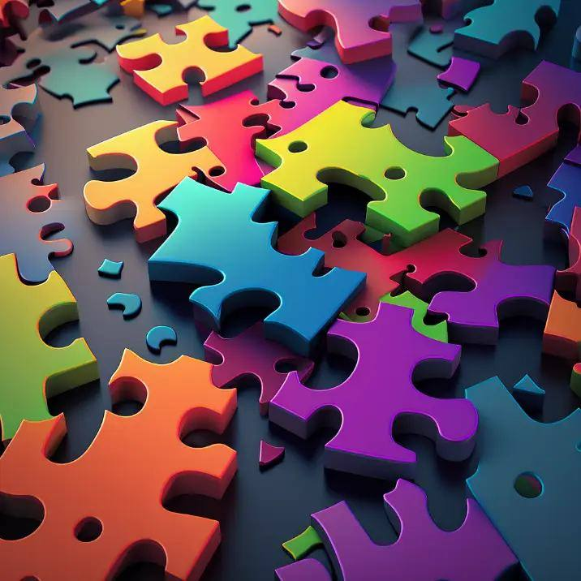

Field guide: Spreadsheets Without Fear
Build three spreadsheets with your own numbers in six weekly lessons.
Join an online course for small business owners who avoid spreadsheets.
- Live on Zoom, Thursdays, 7pm Eastern
- Starts Thursday 14 January 2027
- $249, or $199 before 31 December 2026

Picture it
Treat your numbers like a puzzle
See your receipts and invoices as loose pieces on the table. Use a spreadsheet as the picture on the box: it shows where each piece goes.

Check three numbers from past groups
- 71 people in four groups since March 2025
- 44 of 52 said they now update their own numbers every week
- 39 of 52 said they stopped sending their receipts to someone else to sort
Source: a survey after the course. 52 of the 71 answered.
Follow four steps, each with a time
- Before 31 Dec 2026Register for $199.Pay $249 after that.
- Thu 14 Jan 2027, 7pm EasternJoin the first live lesson.Meet Priya Shah, a bookkeeper for 12 years, and a group of at most 20.
- 6 weeks × 90 minutesBring your own numbers to every lesson.Use Excel or Google Sheets.
- Within 30 daysCatch up on a missed lesson.Watch its recording.
Tick off each sheet as you build it
Avoid these three
- Mistake: blaming yourself
Hear Priya, on a florist from her first year as a bookkeeper:
She was not bad with money. Nobody had ever shown her a spreadsheet slowly.
- Mistake: waiting for month end
Hear Marta, who runs a two-person cleaning company:
I used to dread the end of the month. Now it takes me twenty minutes on a Sunday.
- Mistake: stopping after a missed lesson
Watch the recording. Each one stays available for 30 days.
Register on the course page today.
Start Thursday 14 January 2027. Pay $199 before 31 December 2026.
Register on the course page [needs: registration link]